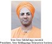

International conference on ADVANCES IN CIVIL ENGINEERING AND ARCHITECTURE (ICACA-2023)
Offline mode15th & 15 th Sep 2023
www. icaca. sit.ac.in
Jointly organized by
Department of Civil Engineering
&
School of Architecture
&
School of Architecture

Siddaganga Institute of Technology
Dr. Shree Shree Sivakumara swamiji Road,
Tumakuru-572103, Karnataka, India
Tumakuru-572103, Karnataka, India
(An Autonomous Institute affiliated to VishveshwaryaTechnological University, Belagavi
Approved by AICTE, new Delhi)
Approved by AICTE, new Delhi)
